Nachtzug
Sequencer · Synthesiser
Operation manual
For Linux, macOS and Windows
NZ · 001
Welcome aboard the Nachtzug! It’s a small music machine for the kind of music that’s made of repeating synthesiser patterns: squelchy acid basslines, rolling Berlin School sequences, slow pads and simple melodies on top, all carried along by a drummer who never gets tired.
You don’t need to be able to play the keyboard and you don’t need to know any music theory. Every note Nachtzug lets you place belongs to the song’s scale, so nothing can sound wrong. Each track can come up with ideas of its own, the drummer plays by itself, and any change you make while the music is running politely waits for the next bar, so it always lands in time.
Don’t worry about breaking anything, either! Every change can be undone, as often as you like, and while you work, Nachtzug quietly keeps a spare copy of your song in case something goes wrong.
This booklet follows the machine from the front panel inwards. I would recommend reading chapter 1 first: in about ten minutes, you’ll have a song of your own playing. You can read the other chapters in any order, whenever you’d like to know more about one part.
Almost every button, knob and corner of the window explains itself. Rest the mouse on it and a short description appears, both next to the pointer and in the status line at the bottom of the window.
Have a good journey!
Nachtzug opens as a single window, laid out like the front of a hardware instrument. The top bar holds the machine’s main controls. Below it, the inspector on the left shows the track you’re working on at a glance, the timeline shows the whole song, and underneath it, the Notes, Sound and Mixer tabs show all the details.
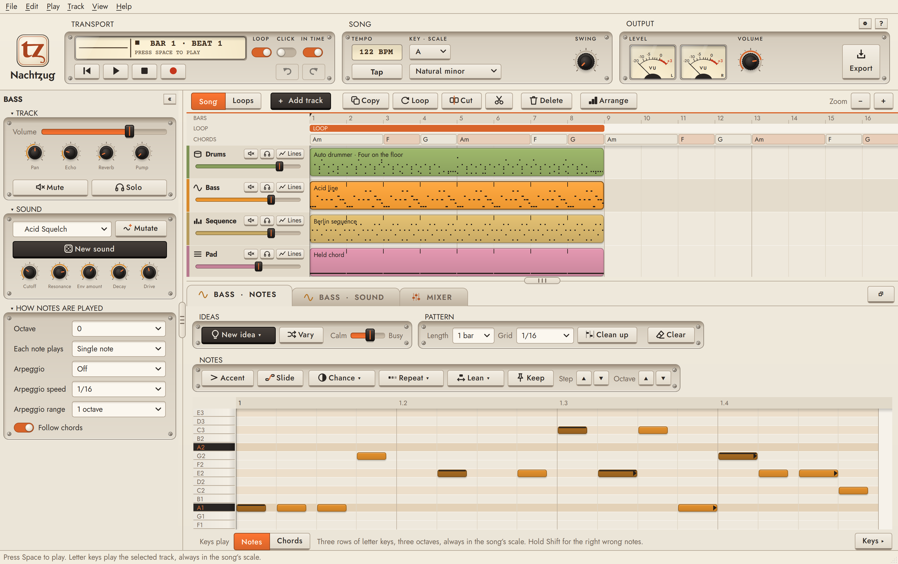
On a big screen, everything fits comfortably. On a laptop, it can get a little cramped, so you can tidy up the window to suit you. Nachtzug remembers all of it for next time.
If the whole window is still too large or too small, have a look at Size in the settings (9.3).
Six steps, about ten minutes. A demo song is already waiting for you the moment Nachtzug starts, so you begin by listening and then change it one part at a time.
The very first time you start Nachtzug, it asks which language you’d like to use and how you’d like to begin. I am new to this gives the Sound tab a few big knobs in plain words and opens a short guide; I know synthesisers shows every knob. Below, you choose how the window looks: keys with a symbol and a word, or the symbols alone; the timeline above the notes or beside them; and scroll bars hidden or shown. You can change all of it later in the settings.
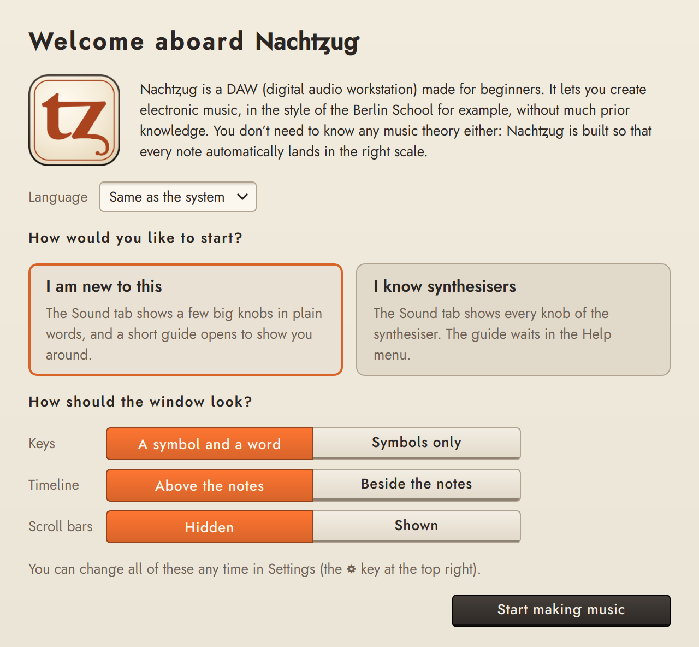
What you’ll do: listen to the demo, give it a new bass line and a new sound, add a melody, turn it into a whole song and save it.
Time: about ten minutes.
Not happy with a change? The ↶ key next to the display takes it back, as often as you like. Fancy a fresh start instead? File → New song with fresh ideas (Ctrl+N) writes a brand-new song with drums, bass, sequence and pad and a random chord progression. Press it a few times: every song is different!
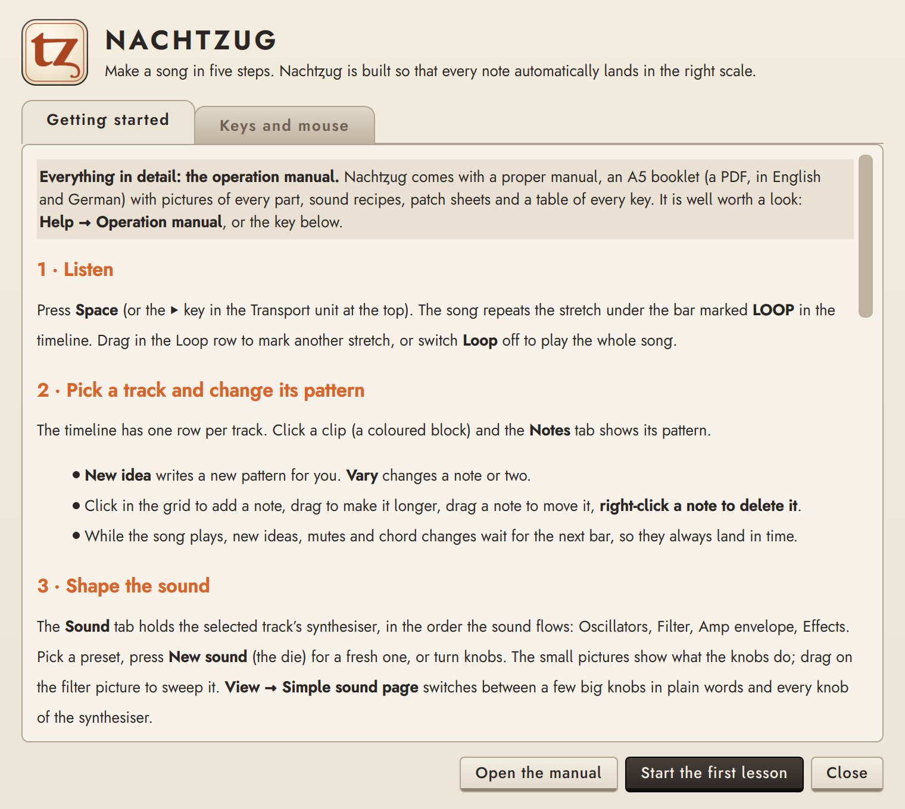
Help → Lessons holds five short guided tours: Your first acid line, Build a beat, Make it move, Berlin School: play the chords and From loop to song. A soft shade lies over the window, with a lit hole around the one thing to use next and a card beside it that tells you what to do. You’re working the real program the whole time: every click goes through, and the lesson moves on by itself once you’ve done the step. Skip goes on without it and End lesson stops. The guide (F1) has a Start the first lesson button, too.
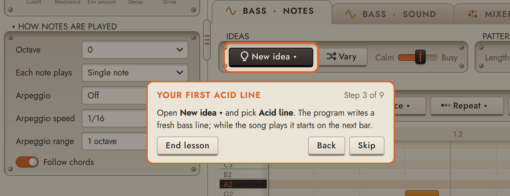
The top bar is made of three units, screwed into the panel like the modules of a rack instrument: Transport runs the song, Song sets its speed and its notes, and Output shows and sets what comes out of your speakers.
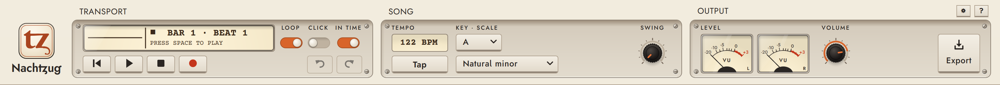
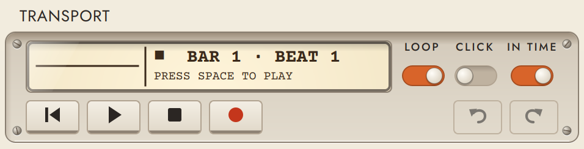
The backlit display shows where the song is on its top line. Below that, it tells you which track the letter keys play, or shows short messages such as CHANGE LANDS ON THE NEXT BAR. The little trace on its left is the sound itself.
| Control | What it does |
|---|---|
| Goes back to the start of the loop, or of the song when Loop is off. Home | |
| Plays. Space starts and stops. | |
| Stops. | |
| Records. While it’s lit and the song is playing, the notes you play and the knobs you turn are written into the song. Ctrl+R | |
| Loop | Repeats the stretch marked in the timeline’s Loop row. When it’s off, the whole song plays. Ctrl+L |
| Click | A metronome: a tick on every beat and a higher one at the start of each bar. Ctrl+K |
| In time | Pulls the notes you play by hand onto the beat while the song plays. |
| ↶ ↷ | Undo and redo, next to the display. Rest the mouse on them to see what they’d take back, such as Undo: New idea. Ctrl+Z, Ctrl+Shift+Z |
After a big change, such as a new idea, a rolled sound or a deleted track, a small note rises at the bottom of the window with an Undo button on it. It fades away by itself, and you can switch it off in the settings if you’d rather not see it.
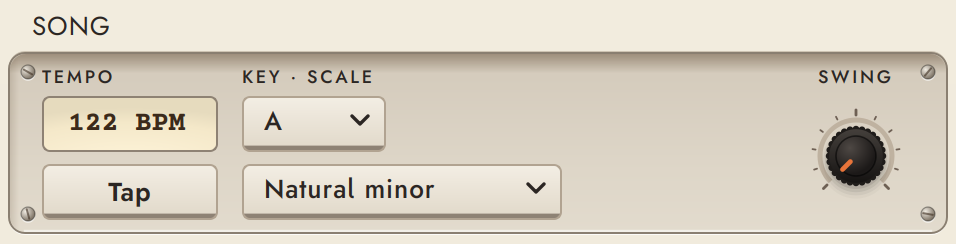
| Control | What it does |
|---|---|
| Tempo | The speed in beats per minute, from 40 to 240. Click it and type, or turn the mouse wheel over it. |
| Tap | Tap along with a beat, four times or more, and the tempo follows you. |
| Key, Scale | The notes the whole song uses. Every pattern is fitted to them, so changing the key moves the whole song with it. While the song plays, the change lands on the next bar. |
| Swing | Plays every second sixteenth note a little late, for a rolling feel. |
Eight scales are built in: Natural minor, Dorian, Phrygian, Harmonic minor, Phrygian dominant, Minor pentatonic, Major and Lydian.
For dark acid and Berlin School music, I would recommend starting with Natural minor, Dorian or Phrygian. Phrygian dominant sounds exotic, and Lydian sounds bright and floating.
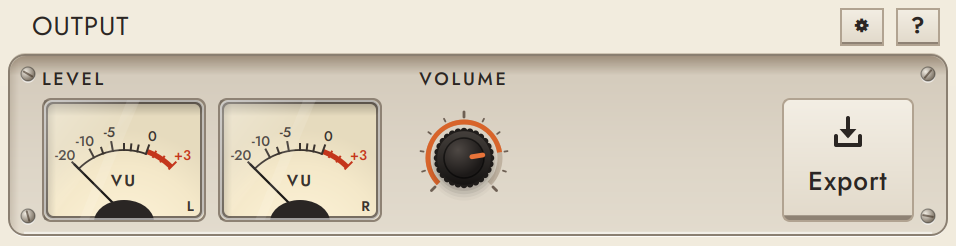
The two needle meters show the level of the left and right channel. When a needle reaches the red mark, the limiter at the very end of the chain is holding the sound back, so it never crackles.
Volume sets the level of everything you hear. Export saves the song as a sound file (Ctrl+Shift+E, 9.2). The ⚙ key opens the settings (9.3) and the ? key opens the short guide (F1).
Each track is one instrument: a synthesiser or the drum machine. There are five kinds, and each one arrives with a fitting sound and a ready-made pattern, so you can hear it straight away.
| Kind | Typical use |
|---|---|
| Bass | Acid lines and low pulses. It plays one note at a time and can glide between notes. |
| Sequence | The repeating run at the heart of Berlin School music. |
| Pad | Long chords in the background. |
| Lead | A melody on top. |
| Drums | The drum machine, played by the auto drummer or by you. |
The column on the left of the window always shows the selected track. Its sections fold shut when you click their names (Making room), so you can keep open only what you need.
A clip is a coloured block in the timeline. It holds a pattern that repeats for as long as the clip lasts and it carries the name of the idea that wrote it. Click a clip and the Notes tab shows its pattern.
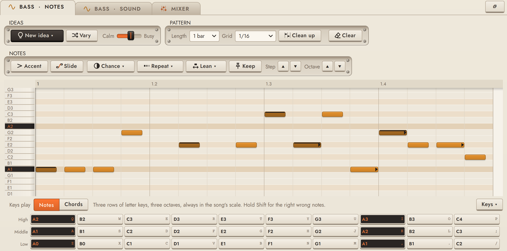
| Control | What it does |
|---|---|
| New idea ▾ | Writes a new pattern. The choices depend on the kind of track (see below). |
| Vary | Changes a note or two. Press it again for more change. |
| Calm – Busy | How many notes new ideas have. |
| Length | How long the pattern is before it repeats: from half a bar up to eight bars. |
| Grid | The step that notes snap to, from quarter notes to thirty-seconds, triplets included. |
| Clean up | Tidies up what you played in (see 3.4). |
| Clear | Removes every note of the pattern. |
| Track | Ideas on offer |
|---|---|
| Bass | Acid line · Octave bounce · Root pulse · Berlin sequence |
| Sequence | Berlin sequence · Arpeggio run · Acid line |
| Pad | Held chord · Chord stabs |
| Lead | Melody · Sparse melody · Arpeggio run |
| Drums | Auto drummer · Four on the floor · Acid house · Motorik · Broken beat |
While the song plays, a new idea or variation starts on the next bar, so it always lands in time.
Every row of the grid is a note of the song’s scale. The dark rows are the key note, for example every A in A minor. Click a note name on the left to hear it. On tracks that follow the chords, the rows of the current chord are tinted: they’re the safest choices and always fit. An empty pattern tells you in the grid itself what to do.
| To do this | Do this |
|---|---|
| Add a note | Click an empty spot. Hold the button and drag to the right to make it longer. |
| Move a note | Drag it: up and down for the pitch, left and right for the timing. |
| Change its length | Drag its right edge. |
| Delete a note | Right-click it. Hold the right button and sweep to delete several at once. |
| Add a bar of arpeggio or chord | Right-click an empty spot and choose an arpeggio (up, down, or up and down), a rolling sequence or a chord: a bar of it starts at that note, built from the scale. On a drum row, you get a bar of hits instead. |
| Select several | Hold Shift and drag a box. Ctrl+click adds or removes one. |
| Zoom | Ctrl + mouse wheel. |
Which part do Delete and copy act on? The note grid and the timeline both answer to Delete, Ctrl+C, Ctrl+V and Ctrl+D. The one you clicked last has a thin coloured line along its top edge.
The buttons of the Notes group act on the selected notes. Step and Octave move every note when none are selected.
Four more buttons only act on selected notes. On a drum track, you select hits with Shift + drag or Ctrl+click (a plain click removes a hit).
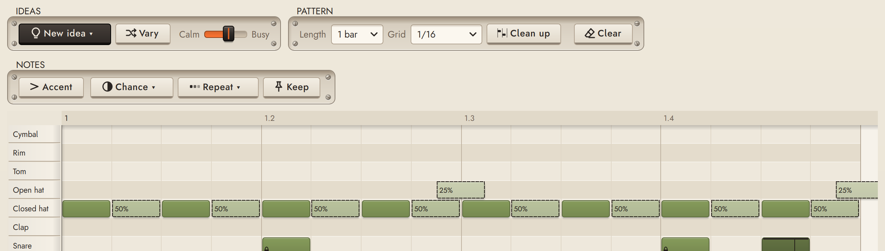
Your computer keyboard is the instrument! Three rows of letter keys play the selected track: three octaves of the song’s scale. Every key is a note of the scale, so any key you press fits. In A natural minor, the keys play:
The octave numbers shift with each track’s Octave setting; the dark keys are always the key note. On a drum track, Z to , play the eight drums.
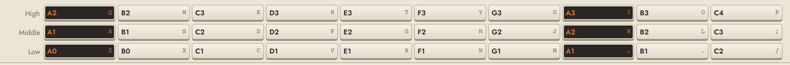
Under How notes are played in the inspector, you can change what a single key does. Each note plays a single note, octaves, fifths, a triad, a seventh chord, an open triad or stacked fourths, all built from the scale. Arpeggio plays held notes one after another: up, down, up and down, at random or in the order you pressed them, at a speed of your choice and over one to three octaves.
With In time on, a note you play a little late sounds at once, and a note you play a little early waits for the beat.
Sometimes the best note is one that doesn’t fit, as long as it’s the right wrong note. Hold Shift while you play, and each key plays a note a semitone outside the scale that leans into the key’s own note: usually the semitone just below it, which pulls upwards, and otherwise the semitone above. Play it just before the key’s own note and you’ll hear it fall into place. While Shift is down, the on-screen keys show which notes you’ll get, and recorded notes keep their ♭ or ♯.
In Chords mode, Shift plays each key’s chord a semitone lower, a chord that slides up into the real one. You can also write one into the chord row (7.2).
Under the note grid, switch Keys play from Notes to Chords (or press Ctrl+J). Now each letter key is a chord of the scale, and every track that follows the chords moves to it at once while it keeps playing its pattern. That’s how the sequencer of an old synthesiser is transposed from its keyboard, and it’s the trick behind a lot of Berlin School music. The chord stays when you let go, and Esc goes back to the song’s own chords. With record on, the chords you press are written into the chord row of the timeline, bar by bar.
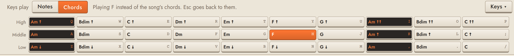
A MIDI keyboard plays along, too (9.6): every key plays the nearest note of the song’s scale, notes you strike hard are accented, and in Chords mode its keys change the chord.
Played it a little wobbly? Press Clean up in the Pattern group. It puts every note onto the grid chosen beside it (Grid), turns doubled notes into one and removes a tiny note you pressed by accident next to the real one. When your pattern goes round three times or more and the rounds are mostly the same, it also fills in a note you missed in one round and puts a wrong key right. A change in the last round is left alone, because that’s usually on purpose, and so are kept notes. The status line says what it changed, and Ctrl+Z brings back what you played.
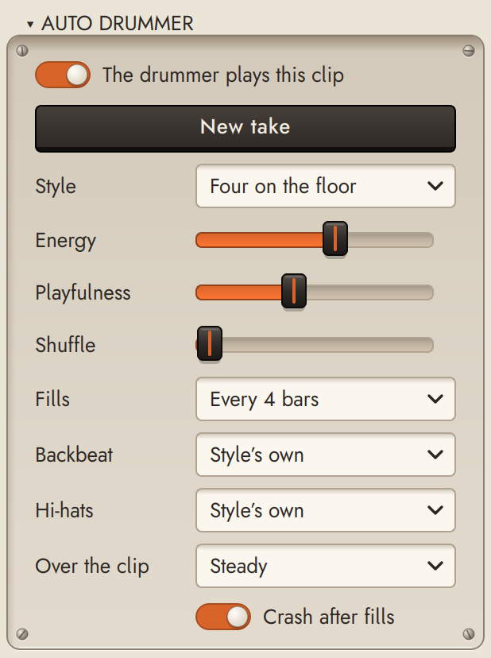
Drum clips start with the auto drummer switched on. It writes the drum hits from a handful of settings, and it writes them again the moment you change one, so you can steer the groove while it plays. Select a drum clip and you’ll find the drummer in the inspector on the left.
There are seven styles: Four on the floor, Acid house, Motorik, Broken beat, Half time, Electro and Berlin pulse.
| Setting | What it does |
|---|---|
| The drummer plays this clip | Switch it off to place the hits yourself. The hits the drummer wrote stay, as a starting point. |
| New take | The same settings, played a little differently. It sits at the top, so it’s always in reach. |
| Style | The kind of beat. |
| Energy | How hard the drummer plays. Every bit of it counts: from a bare pulse at the bottom, through ghost notes and extra kicks, up to busy hats, crashes and long fills at the top. |
| Playfulness | How many ghost notes and small surprises are added. |
| Shuffle | Plays every second sixteenth a little late. |
| Fills | Never, or every 2, 4 or 8 bars. A fill always comes at the end of the clip, too. The more energy, the longer and busier the fills. |
| Backbeat | Which drum plays on beats 2 and 4: the style’s own, clap, snare, rim or none. |
| Hi-hats | The style’s own, eighths, sixteenths, offbeats only, or none. |
| Over the clip | Steady, Build up (soft to hard) or Wind down. These are great for the start and the end of a song. |
| Crash after fills | A cymbal crash on the first beat after each fill. |
Try building a song from three drum clips: one set to Build up at the start, a steady one in the middle with fills every 8 bars, and one set to Wind down at the end.
To place hits by hand, switch the drummer off, then click in the grid to add a hit and click a hit to remove it. The eight drums are Kick, Snare, Clap, Closed hat, Open hat, Tom, Rim and Cymbal.
Every synth track has a synthesiser of its own. The Sound tab lays it out in the order the sound travels: the oscillators make a raw tone, the filter shapes its colour, the amp envelope shapes its loudness and the effects add space and grit. Small windows of graph paper show you what the knobs are doing.
The sections wrap onto as many rows as the window needs, so on a narrow screen the tab simply gets longer and you scroll down. Click a section’s name to fold it shut (Making room); a folded section keeps a one-line summary, such as Low-pass 24 dB.
Drag a knob up or down. Hold Shift for small steps and double-click to reset it. Rest the mouse on a knob to read its value and what it does. A small red dot on a knob means a line is moving it over time (chapter 6).
The Sound tab has two pages. You can switch between them with View → Simple sound page or on the General page of the settings, and Nachtzug remembers your choice. Full shows every knob, as described from 5.3 on. Simple shows eight big knobs in plain words instead. Each one moves several knobs of the Full page at once, from wherever they happen to be, so a preset keeps its character.
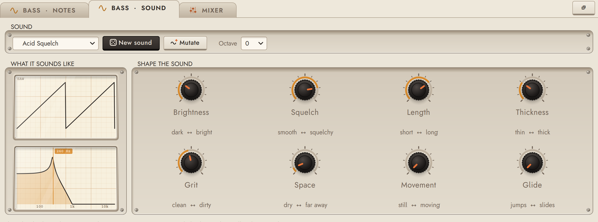
| Big knob | What it moves |
|---|---|
| Brightness | Dark to bright: the filter Cutoff. |
| Squelch | The acid sound: Resonance, Env amount and Accent together. |
| Length | Short plucks to long notes: amp and filter Decay, and Release. |
| Thickness | Thin to fat: unison copies, the sub oscillator and detune. |
| Grit | Clean to dirty: Drive. |
| Space | Dry to far away: how much goes into the reverb and the echo. |
| Movement | Still to moving: a slow filter wobble from the LFO, and chorus. |
| Glide | Jumps to slides between notes. |
For a drum track, the Simple page has a level knob for each drum, a to hear it, its sample button (9.4) and Grit, Echo and Space for the whole kit.
| Group | Presets |
|---|---|
| Bass | Acid Squelch · Rubber Square · Deep Bass · Zap Bass |
| Sequence | Berlin Sequence · Glass Pluck · Pulse Wanderer · Hollow Band |
| Pad | String Machine · Supersaw Pad · Phase Choir · Night Drone · Thin Air |
| Lead | Mellow Lead · Saw Lead · Wide Unison Lead |
| Bells and effects | FM Bell · Sample and Hold |
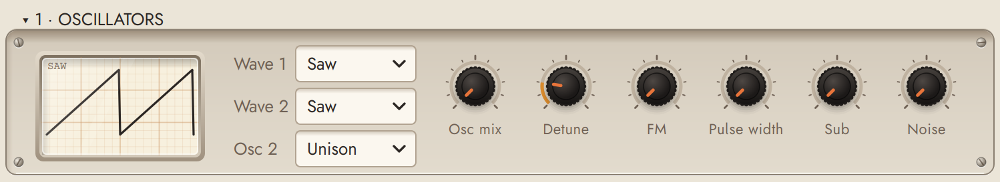
| Control | What it does |
|---|---|
| Wave 1, 2 | Saw, pulse, triangle or sine. The window shows the mixed wave. |
| Osc 2 | Tunes the second oscillator an octave down, in unison, a fifth up or an octave up. |
| Osc mix | Blends the two. |
| Detune | Makes them beat slowly against each other. |
| FM | Lets the second bend the first: bells and metallic tones. |
| Pulse width | Thins out the pulse wave. |
| Sub, Noise | A deep tone an octave below; hiss. |
| Voices | Unison: stacks up to seven slightly detuned copies for a huge sound. Unison detune sets how far apart, Stereo spread spreads them left and right. |
| Play | Poly plays chords (up to eight notes); Mono plays one note at a time, as acid basslines do. |
| Glide | Slides the pitch from one note to the next. |
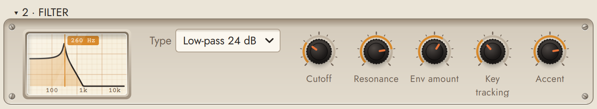
The filter takes part of the sound away. Sweeping it is the gesture at the heart of acid music, so this is the section I’d play with first.
| Control | What it does |
|---|---|
| Type | Low-pass 24 dB or 12 dB (the classic dark-to-bright sweep), band-pass (thin and nasal), high-pass (removes the low end). |
| Cutoff | Where it cuts. |
| Resonance | Adds a squelchy peak at the cutoff. |
| Env amount | How far each note opens the filter. |
| Key tracking | Makes high notes brighter. |
| Accent | How much accented notes stand out. |
The acid recipe: Mono, low-pass 24 dB, Cutoff low, Resonance high, Env amount about halfway, short filter Decay, and a pattern with accents and slides. Then turn Cutoff slowly while it plays.
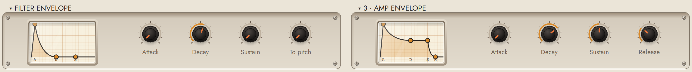
An envelope is a shape that every note follows. The filter envelope opens and closes the filter on each note with Attack, Decay and Sustain; To pitch bends the pitch along with it, for zaps and laser sounds. The amp envelope sets how loud each note is over time: a short attack and decay for plucks, long ones for pads. Release is how long a note rings on after it ends.
The LFO is a slow, repeating movement: a triangle, a square or random steps. You can send it to the filter (LFO to filter), the pitch (Vibrato) or the pulse width (LFO to width). The dot in its window travels at the LFO’s speed.
Effects: Drive (distortion), Phaser with its rate, Chorus, and how much of the track goes into the shared Echo and Reverb.
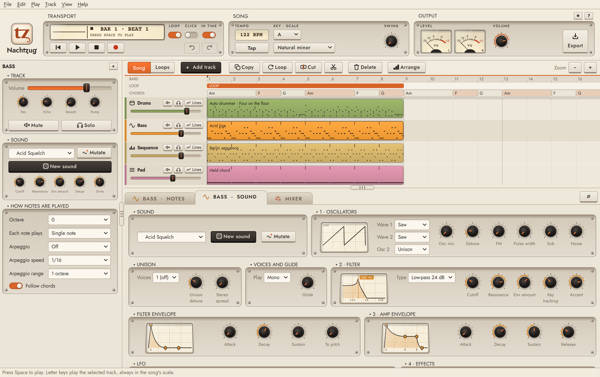
For a drum track, the Sound tab shows the drum kit instead: a kit preset (Machine kit, Soft boom kit or Tight acid kit) and Level, Tune and Decay for each of the eight drums, with a to hear each one. The inspector keeps the kit and its Drive, Echo and Reverb close at hand.
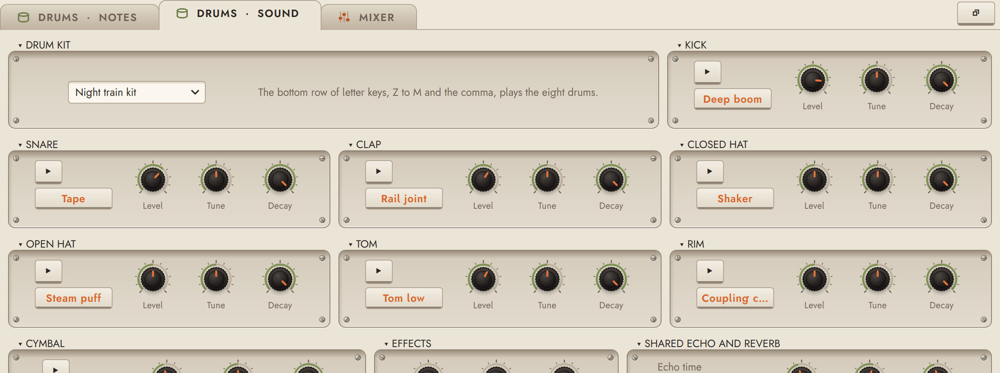
Every drum can play a sound of your own instead: click Built-in under it and pick a sample, import a sound file or record one (9.4). With a sample, Tune plays it faster or slower, up to an octave either way, and Decay shortens it; turned all the way up, the whole sample plays. Four kits are made of samples from the Nachtzug library (9.4): the Night train kit, Tape kit, Electro kit and Hand percussion kit. Choosing another kit brings that kit’s sounds, but a drum that plays one of your own samples keeps it.
A filter that slowly opens over sixteen bars makes a repeating pattern come alive. Any knob can follow a line, and drawing one only takes a moment.
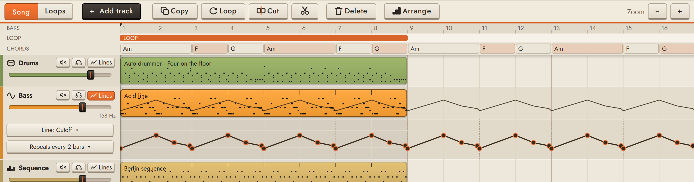
Press so that it lights up, press and turn a knob. Your movement is written down as a line.
A knob on a MIDI controller records just the same once it has learned its knob on screen (9.6).
Setting a knob by hand pauses its line, so you can try things out without losing it. Resume lines on the Sound tab brings the lines back. To delete a line, right-click the knob and choose Erase the line.
In Song mode, the timeline shows your whole song. Time runs from left to right in bars, with one row per track. Three rows sit at the top:
| To do this | Do this |
|---|---|
| Make a clip | Double-click an empty spot in a track’s row. |
| Select | Click. Ctrl+click adds more. |
| Edit its notes | Double-click it. |
| Move | Drag it, also onto another track of the same kind. |
| Make it longer | Drag its right edge. Ticks along the top show where the pattern repeats. |
| Cut in two | The scissors (✂) on, then click where to cut; or Cut (Ctrl+E). |
| Copy | Copy (Ctrl+D) puts a copy right after it. Ctrl+C / V paste at the playhead. |
| Delete | Delete, or the Delete key. |
| Fade in or out | Right-click → Transition at the start or at the end: a fade, a filter sweep, or both, one beat to four bars long. A dark wedge shows it. |
Moves snap to whole beats; hold Shift for sixteenth steps. Ctrl + wheel or − + zoom in and out. And remember: ↶ or Ctrl+Z undoes anything.
Each bar has a chord. Tracks set to Follow chords (bass, sequence and pad, to begin with) move their notes along with it, so a single one-bar pattern can play over a whole progression.
When you’ve zoomed out a long way, each stretch of the same chord is one block in the chord row, and the blocks alternate in colour, so the changes are always easy to see. Rest the mouse on a bar to see its chord.
Whether a track follows the chords is set with Follow chords under How notes are played in the inspector, or by right-clicking its name. Leads and drums don’t follow to begin with.
Turning a loop that sounds good into a whole song is often the hardest part. Arrange for me does it for you: the Arrange key above the timeline, or the Edit menu. It takes each track’s pattern at the loop and lays the song out in parts:
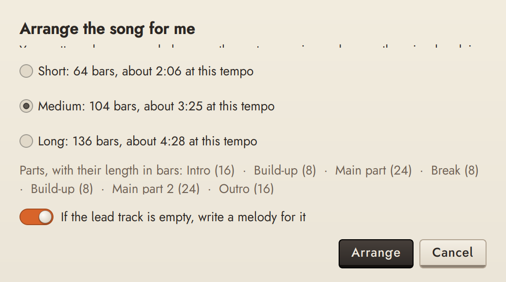
| Part | What plays |
|---|---|
| Intro | A soft drummer, the pad fading in, the sequence fading in as its filter opens. |
| Build-up | The bass comes in with its filter opening; the drummer builds up. |
| Main part | Everything. |
| Break | No drums and no bass: pad, sequence and the lead. |
| Main part 2 | Everything again, with the lead, a busier drummer and slightly varied patterns. |
| Outro | The drummer winds down; the parts fade out with their filters closing. |
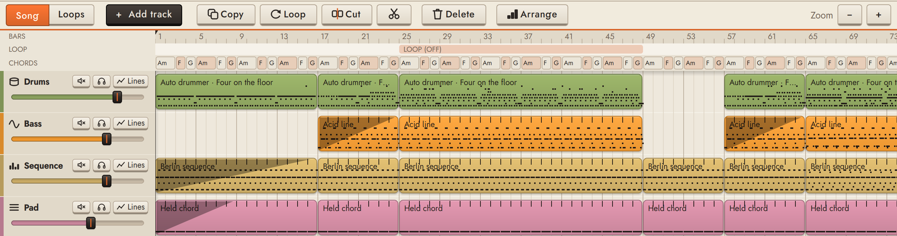
If the lead track is still empty, it gets a melody of its own. Whatever was in the timeline before is replaced, but ↶ brings it back. Afterwards, everything is made of ordinary clips: move them, lengthen them and change them as you like, and use the loop to work on one part at a time.
Press Loops next to Song and the timeline turns into a grid. It’s made for trying out ideas and for playing live: every track has a row of cells, and each cell holds a pattern.
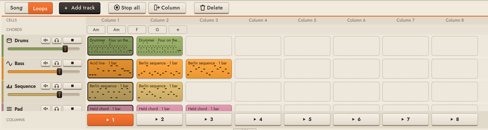
Press so that it lights up while you start and stop cells. Everything you launch is written into the song timeline as clips, from the bar it started to the bar it stopped. Switch back to Song to see the result, and edit it like any other part of the timeline. A good jam is half a song already!
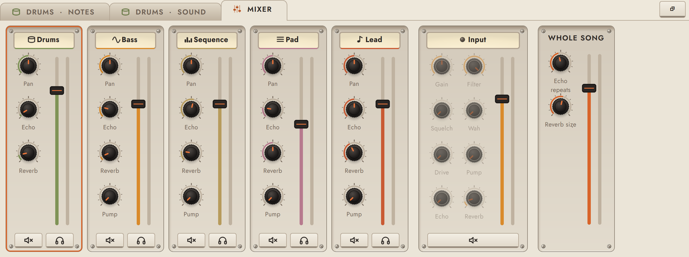
The Mixer tab shows one strip per track, each screwed into its own well: Pan, Echo and Reverb knobs, a volume fader with the track’s level next to it, and Mute and Solo. Double-click a fader to reset it. The Whole song strip holds the master volume, the echo repeats and the reverb size.
Pump, on every track except the drums, ducks the track on each kick drum and lets it swell back within about a third of a beat: the breathing sound of so much dance music. Try it on a pad or a bass line, you’ll hear it straight away! The kick drives it even when the drum track is muted.
The Input strip plays the sound card’s input live through Nachtzug: a guitar, a voice, another synthesiser. Press Input to open it (the device is chosen on the Sound card page of the settings). Gain sets how loud it comes in, Filter and Squelch work like the synthesiser’s filter, Wah opens the filter as you play louder, like a wah pedal, and Drive, Pump, Echo and Reverb do what they do on the tracks. The input is never part of an export.
With a microphone, please use headphones! Through speakers, the sound would feed back into the microphone and howl.
A limiter guards the output, so the sound won’t crackle if the mix gets too loud, but it will be squashed. If the meters sit in the red, turn tracks down rather than up.
| Menu entry | What it does |
|---|---|
| New song with fresh ideas Ctrl+N | Drums, bass, sequence and pad, and a random chord progression. |
| New empty song | A song with no tracks. |
| Open… Ctrl+O | Opens a .nachtzug song. |
| Save Ctrl+S | Saves the song. Save as… adds Shift. |
| Export: sound file, tracks or MIDI… Ctrl+Shift+E | The same as the Export key (below). |
| Settings… Ctrl+, | Language, colours, size, sound card, samples and MIDI (9.3). |
If there are unsaved changes, Nachtzug asks you before it closes or opens another song; the window title shows a * while there are.
While there are unsaved changes, Nachtzug quietly keeps a spare copy every half minute. If it ever closes without asking (a crash, say, or the computer switching off), the next start offers to bring the song back, including the changes you hadn’t saved. When it closes normally, the copy is thrown away.
Press Export at the top right. Under Make, choose what you’d like to come out:
01 Drums.wav, 02 Bass.wav …) in a new folder. They all start at the same moment and add up exactly to the song, echoes and reverb included, for mixing it in another music program.Muted tracks are left out of all three.
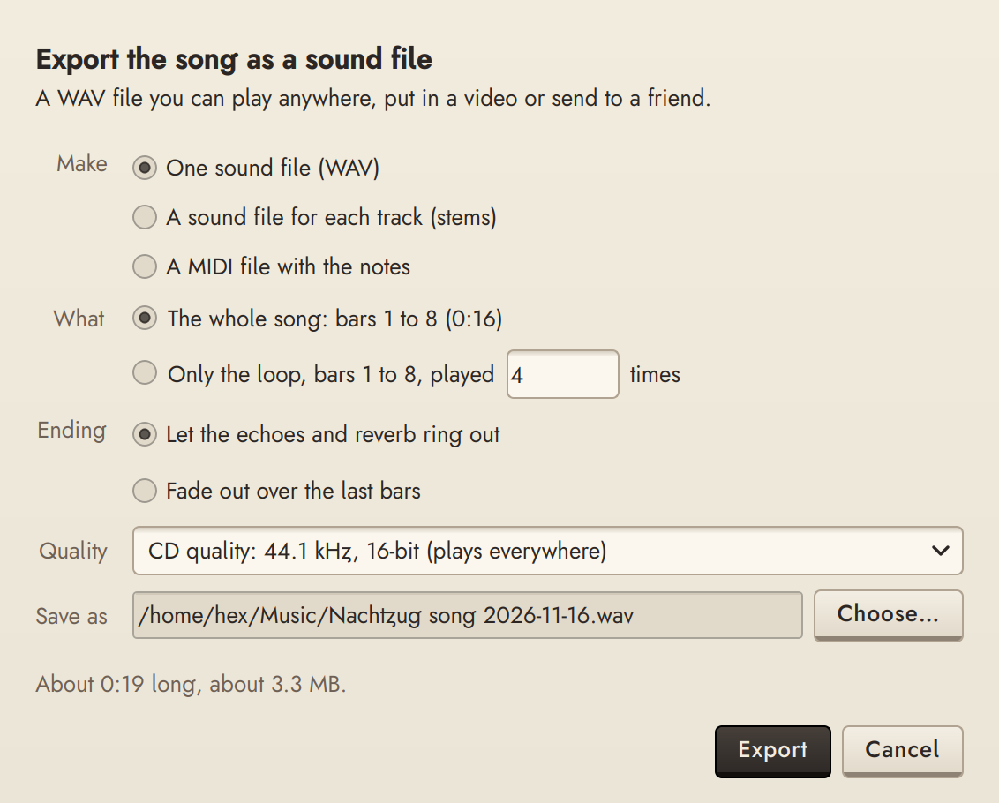
| Setting | Choices |
|---|---|
| What | The whole song from bar 1 to the end of the last clip, whatever the loop; or only the loop, played 1 to 32 times, for a seamless loop or a practice track. |
| Ending | Let the echo and reverb ring out (the file ends once they have died away), or fade out over the last bars. |
| Quality | CD quality, 44.1 kHz 16-bit, plays on everything. 48 kHz 16-bit suits video; 24-bit at 48 or 96 kHz is for further work in a studio program. |
| Save as | The file name, in your Music folder to begin with; Choose… picks another place. Nachtzug asks before replacing a file. |
Once the file is written, Your song is ready shows its length and size, with Play it and Show in folder. If you prefer the terminal: nachtzug --render out.wav song.nachtzug.
The ⚙ key in the Output unit, or File → Settings… (Ctrl+,), opens the settings. Every change counts straight away.
| Page | What you can set |
|---|---|
| General | Language (from the next start), colours, Size, whether the Sound tab opens Simple or Full, Keys (symbol and word, or symbols only), Window (the timeline above or beside the notes), the on-screen keys, the Undo note, the scroll bars and the welcome window. |
| Sound card | Sound system (Automatic picks the best one; on Linux also PipeWire, PulseAudio, ALSA or JACK), Play through (which speakers or headphones), Sample rate and Buffer. A line under them says what is running. Play a test tone checks that sound comes out. Record from picks the input, for recording samples and for the mixer’s Input strip. |
| Samples | Your sample library (9.4). |
| MIDI | Keyboards, controllers and clock (9.6). |
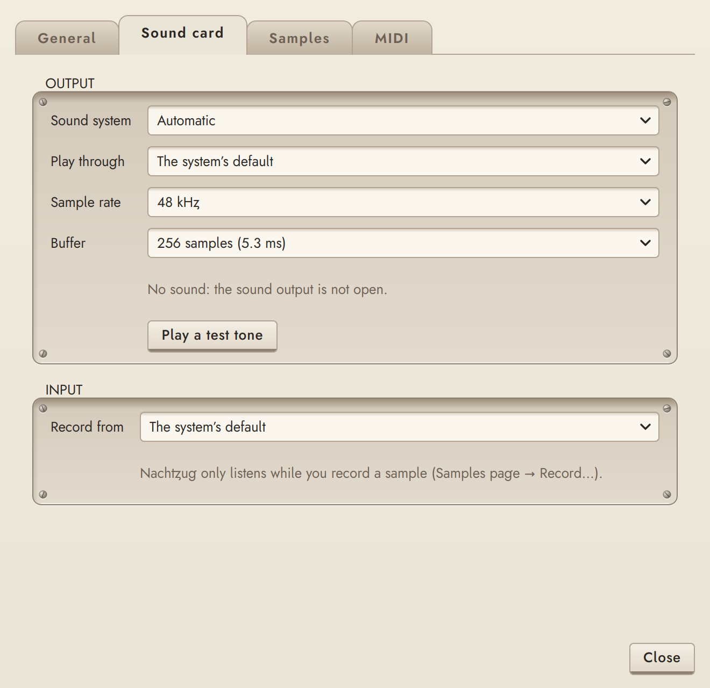
A smaller Buffer makes the letter keys answer faster; if the sound crackles, choose a larger one. 256 samples is a good middle ground. If the sound card you chose is missing at the next start (unplugged headphones, for example), Nachtzug falls back to the default one and tells you so.
Size draws the whole window larger or smaller, from 80 to 200 %. On Automatic (the default), Nachtzug picks a size that fits your screen comfortably: on a laptop, that’s usually 90 %, so nothing feels cramped. A new size counts from the next start, but Start again now restarts at once (it asks about unsaved changes first). Sizes too large for your screen are shown but can’t be chosen.
Any of the eight drums can play a sample instead of its own sound. Nachtzug comes with a library of 65 sounds made just for it, every one of them synthesised from oscillators, noise and filters: kicks, snares, claps, hats, cymbals and percussion, nine sounds of a night train (rail joints, the door chime, brakes, a distant horn), tones, effects and four long textures such as rain on the window. You’ll find the whole list in A.4.
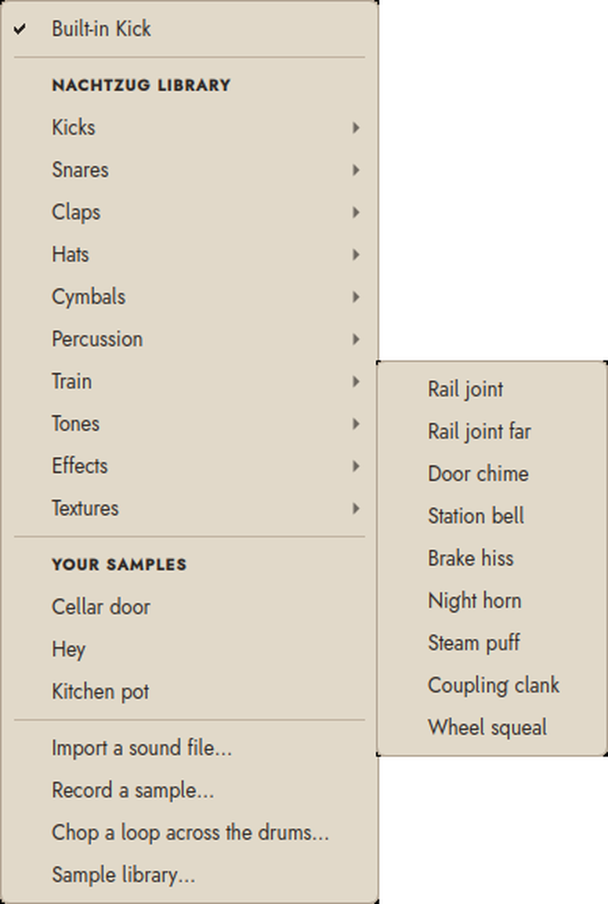
Click the button under a drum (it says Built-in until you choose something) and open a category. Rest the mouse on a sound to hear it and click to choose it; the drum then plays it at its own pitch and in full. The quickest way in is a sampled kit (5.7). My favourite is the Night train kit: the deep kick, a tape snare, the rail joint as the clap, a shaker as the closed hat, a puff of steam as the open hat, a low tom, the coupling clank as the rim and the door chime as the cymbal.
The textures last several seconds. Put one on a drum you play by hand, the tom for example, with one hit every four or eight bars, and turn its Level down: rain or distant rails under an intro sound lovely.
The Samples page of the settings shows the library and your own samples.
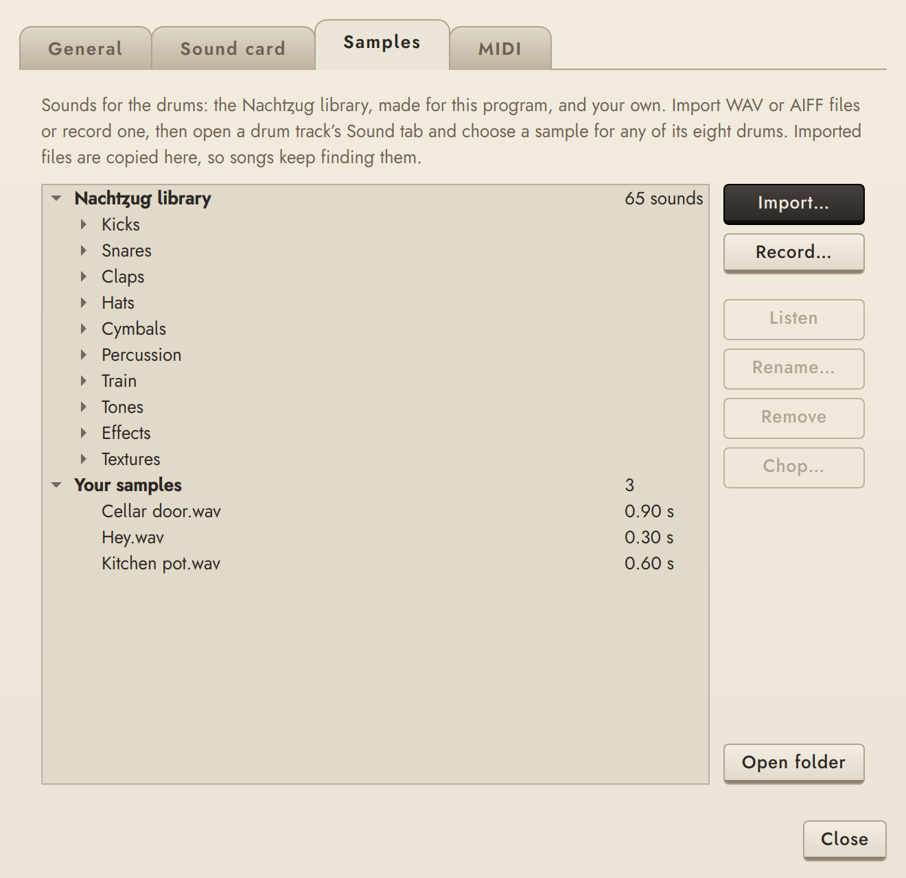
To use a sample, open a drum track’s Sound tab and click Built-in under a drum (5.7). The same menu can import or record a sample straight away. A song remembers the names of its samples; if one is missing when you open the song, its drum plays the built-in sound and Nachtzug says which sample it could not find.
A drum loop from somewhere else can be cut into pieces, one on each drum pad. Choose Track → Chop a loop across the drums… (or Chop… on the Samples page, or the entry in the sample menu under a drum) and pick the loop.
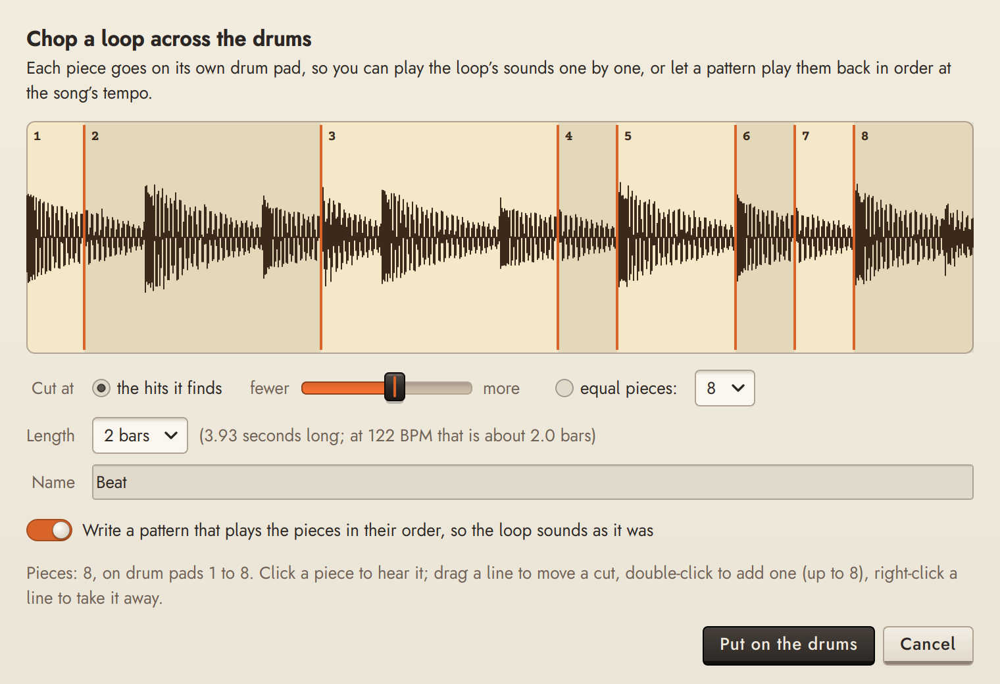
The pieces are saved in your sample library under the name you give them, numbered, so the song finds them again. The selected drum track gets them; if no drum track is selected, the first one does, or a new one is made. A single ↶ takes it all back.
View → Colours, or the General page of the settings, offers six themes and remembers your choice.
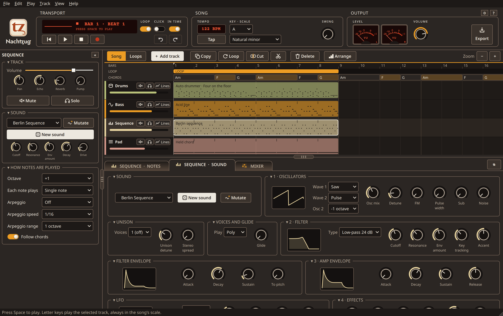
Nachtzug listens to every MIDI device that’s plugged in, unless you choose one on the MIDI page of the settings; a line there shows what came in last.
On Linux, MIDI needs your user to be in the audio group. If it isn’t, the MIDI page tells you so: type sudo usermod -aG audio $USER in a terminal, then log out and back in.
Three classic sounds, knob by knob. Pick the named preset to start from it, or set the knobs yourself after a press of New sound to learn what each one does. The knobs are drawn where they sit, and anything not shown stays as it is.
Found a sound you love? Write it down on one of the patch sheets at the back of this booklet, the way synth players have always done!
| Key | Action |
|---|---|
| Space | Play or stop |
| Home | Back to the start |
| Letter keys | Play the selected track (3.4) |
| Ctrl+R | Record on or off |
| Ctrl+L | Loop on or off |
| Ctrl+K | Metronome on or off |
| Ctrl+J | Chords mode on or off (3.4) |
| Esc | Back to the song’s chords; stop waiting for a MIDI knob |
| Ctrl+Z / Ctrl+Shift+Z | Undo / redo (also the ↶ ↷ keys) |
| Ctrl+C X V | Copy, cut, paste |
| Ctrl+D | Duplicate |
| Ctrl+A | Select all |
| Delete | Delete what is selected |
| Ctrl+E | Cut the selected clip at the playhead |
| Ctrl+N O S | New song, open, save |
| Ctrl+Shift+E | Export the song |
| Ctrl+, | Settings |
| Ctrl+I | Show or put away the inspector (Making room) |
| F1 | The How to guide |
| Ctrl + wheel | Zoom the note grid or the timeline |
| Shift + drag | Fine steps for knobs, faders, notes, clips and line points |
If the sound output couldn’t be opened, Nachtzug tells you so when it starts. Open the settings (⚙), go to Sound card and press Play a test tone, then try another Play through or Sound system. Also check that no other program is holding the audio device to itself, that your tracks aren’t muted and that Volume is turned up. Bluetooth headphones sometimes get stuck; connecting them again usually helps.
Choose a larger Buffer on the Sound card page of the settings and close other programs that use a lot of processor time.
The sample isn’t in the library any more (it was removed or renamed). Import it again and pick it under that drum.
A text field may have the keyboard: after typing a tempo, press Esc or click somewhere else. Also check which track the display says the keys play.
The auto drummer is writing that clip. Switch off The drummer plays this clip in the inspector first.
While the song plays, new ideas, mutes, chord changes and loop-grid launches wait for the next bar line, so they land in time. The display tells you while one is waiting.
It’s following a line. Turning it by hand pauses the line, Resume lines brings it back and right-clicking the knob lets you erase it.
Set Size on the General page of the settings to Automatic or a smaller size and press Start again now. Folding sections, putting the inspector away or giving the tabs a window of their own makes room, too (Making room).
Open the MIDI page of the settings: it says whether Nachtzug may use MIDI at all (on Linux, see the tip in 9.6) and shows what came in last. After plugging a device in, press Look for devices again.
Don’t worry! Start it again and it offers to bring the song back, including the changes you hadn’t saved (9.2).
Click the slim » tab on the left edge of the window, press Ctrl+I or choose View → Inspector.
Several loud tracks add up. Turn some tracks down in the mixer, or lower Drive on the loudest one.
| Tracks | Up to 12; bass, sequence, pad, lead or drums |
| Synth voices | 8 per track, mono or poly, with glide |
| Oscillators | 2 per voice (saw, pulse, triangle, sine), sub, noise, FM, unison up to 7 copies |
| Filter | Resonant ladder; low-pass 24 / 12 dB, band-pass, high-pass; key tracking, accent |
| Envelopes | Filter ADS with pitch amount; amp ADSR |
| LFO | Triangle, square, random; to filter, pitch, pulse width |
| Effects | Per track: drive, phaser, chorus. Shared: tempo echo, reverb. Output limiter |
| Drums | 8 synthesised drums, each can play a sample instead; 3 synthesised and 4 sampled kits; auto drummer with 7 styles; loops chopped across the pads |
| Notes | Accent, slide, chance (100, 75, 50, 25 %), 1 to 4 quick repeats, keep |
| Mixer | Per track: volume, pan, echo, reverb, pump (ducking from the kick), mute, solo. A live input strip with filter, wah, drive, pump and sends |
| Presets | 18 synth sounds, plus a random sound generator |
| Scales | 8; every key |
| Patterns | ½ to 8 bars; grid ¼ to 1/32 with triplets |
| Time | 4/4, 40 to 240 BPM, swing |
| Export | WAV stereo, 44.1, 48 or 96 kHz, 16-bit (dithered) or 24-bit; whole song or loop, ring-out or fade; one file per track (stems); standard MIDI file |
| MIDI | Keyboards (scale-locked, accent from velocity, GM drum notes), learned controller knobs, clock in and out with start, stop and song position |
| Samples | A library of 65 sounds made for Nachtzug; your own WAV and AIFF, 8 to 32-bit, mono or stereo, up to 60 s; recording from any input |
| Song file | .nachtzug (plain JSON) |
| System | Linux, macOS and Windows; Qt 6 and SDL2 (PipeWire, PulseAudio, ALSA, JACK; Core Audio; WASAPI); MIDI through ALSA, Core MIDI or Windows MIDI |
| Languages | English, German |
| Not yet | Audio tracks, MP3 and FLAC import |
Every sound is synthesised by tools/samplegen, the program’s own sample maker. The tonal ones say which note they play; Tune moves them an octave either way.
| Kind | Sounds |
|---|---|
| Kicks | Deep boom: Long and round, with a deep tail; Punch: Short and firm, cuts through a busy mix; Analog thump: Dry and woody, like an old drum machine; Rumble: Hard, with a dark rumbling tail, for techno; Hard: Distorted and tight, for acid; Soft felt: Muffled and gentle, for quiet songs; Sub boom: More felt than heard: a very low swell; Click: Very short, with a sharp click |
| Snares | Tight: Crisp and short; Fat: Deep and long, with a little room; Tape: Warm and worn, as if played from tape; Brush: The soft swish of a brush; Electro: Noise and a falling zap; Rim snare: A snare with a ringing rim |
| Claps | Classic: Several hands at once, like a drum machine; Big room: A clap in a large hall; Snap: A finger snap; Crowd: Many people clapping together |
| Hats | Closed: The everyday hi-hat; Tight: Very short and bright; Open: Opens and rings out; Sizzle: A long, sizzling open hat; Pedal: A soft chick from the foot pedal; Shaker: A shaker, back and forth; Tambourine: Jingles |
| Cymbals | Crash: A big crash; Ride: A ringing ride; Ride bell: The bell of a ride; Reverse crash: A crash backwards: it swells up to the next bar |
| Percussion | Cowbell: Two metallic tones; Clave: A bright wooden click; Woodblock: A hollow wooden knock; Conga high: A hand drum, high; Conga low: A hand drum, low; Bongo: A small hand drum; Tom low: A synth tom, low; Tom mid: A synth tom, middle; Tom high: A synth tom, high; Rimshot: A stick on the rim; Triangle: A long, clear ring |
| Train | Rail joint: Wheels over a rail joint: ta-dum; Rail joint far: The same, far away; Door chime: Two tones before the doors close; Station bell: A small bell on the platform; Brake hiss: Air from the brakes; Night horn: A soft horn chord in the distance; Steam puff: A puff of steam; Coupling clank: Two carriages coupling; Wheel squeal: Wheels squealing in a curve |
| Tones | Sub drop: A deep tone falling away; Zap: A fast falling zap; Laser: A space laser; Blip: A short beep; Acid stab: One squelchy acid note, C; Chord stab: A short chord, C minor; FM bell: A glassy bell, A; Pluck: A plucked string, A |
| Effects | Riser: Noise rising for three seconds, before a drop; Downlifter: Noise falling away; Impact: A huge hit with a long tail; Power down: Like a tape machine stopping |
| Textures | Night rain: Rain on the window, seven seconds; Vinyl crackle: An old record, seven seconds; Wind in the carriage: Wind through a gap, with a faint whistle; Rails at night: A train far away: rail joints every 1.1 seconds |
Settings live in ~/.config/Nachtzug/Nachtzug.conf, your own samples in ~/.local/share/Nachtzug/Nachtzug/samples (on a Mac: ~/Library/Application Support/Nachtzug/Nachtzug/samples).
Hans Baluschek (1870–1935), “Großstadtbahnhof”, 1904. Baluschek painted Berlin and its railways like no one else; this station at nightfall, its locomotives steaming under the lamps, is in the public domain. The only copy to be found is a small scan of a printed reproduction (Wikimedia Commons); for Nachtzug the printer’s screen was taken out, the picture was enlarged with the AI upscaler 4xRealWebPhoto_v4_dat2 (Phhofm, CC BY 4.0) and its colours were freshened a little.
| What | Licence |
|---|---|
| Nachtzug Antiqua, Grotesk, Initialen and Ornamente (our own, built on EB Garamond and Jost); Jost, EB Garamond, Courier Prime, Crimson Pro, Barlow, Michroma | SIL Open Font License 1.1 |
| Qt 6: the window, the controls, text and pictures | LGPL 3.0 |
| SDL 2: the sound card | zlib |
| The libraries in the Linux AppImage and the Mac and Windows downloads | MIT, BSD, zlib, LGPL; each licence is inside the download |
| Part | Licence |
|---|---|
| The program | GNU GPL, version 3 or later |
| The sample library and the demo songs | CC0 1.0: public domain |
| This manual and the pictures (the cover painting excepted) | CC BY-SA 4.0 |
Everything you make with Nachtzug is yours, completely. Every licence in full, and every part Nachtzug is built on: mjohanning99.github.io/nachtzug/licences.html.
Copyright © 2026 Marvin Johanning. Nachtzug is free software, distributed in the hope that it will be useful, but without any warranty. Thank you to everyone whose work it is built on!
A sequencer and synthesiser for acid and Berlin School music, made for people who love music but never learned an instrument.